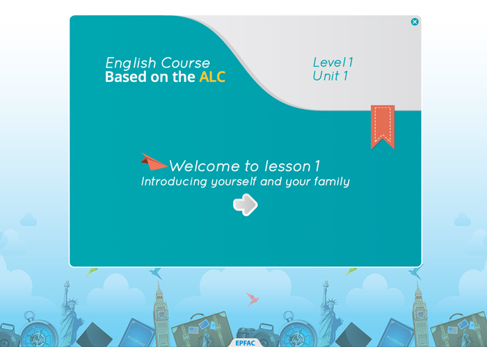
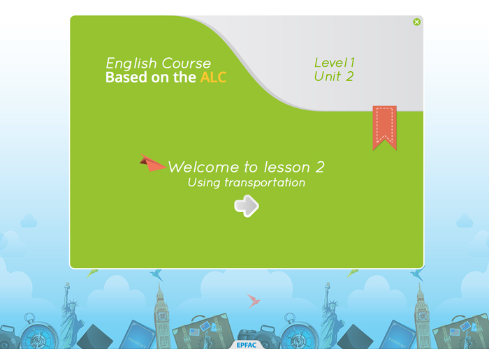
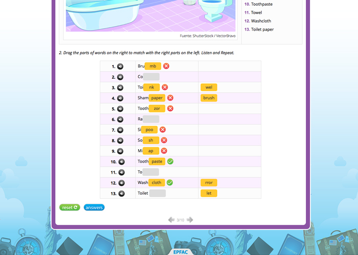
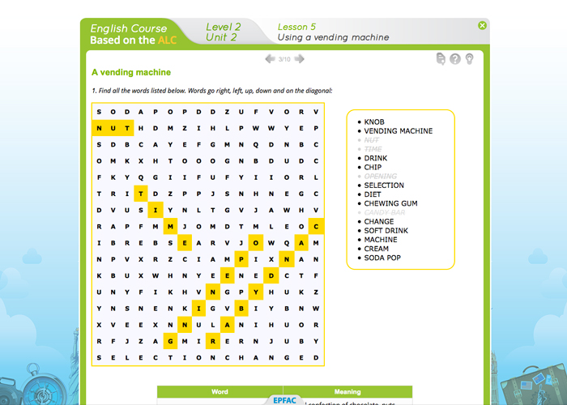
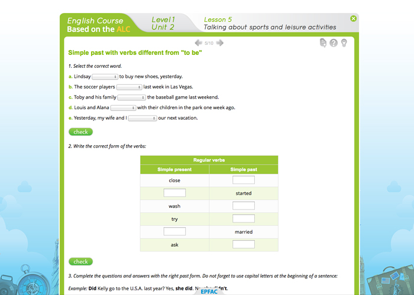
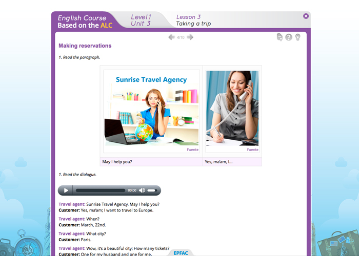
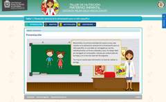

--- Projects ---
English course - Based on the ALC
In this project, the adaptation of a specialized English course for the Colombian Air Force was carried out, which was in printed format without an editorial design work, when the digital design was made, images, some illustrations and edition design were included. Furthermore, approximately 11 different types of activities of self-evaluation activities were developed such as word search, crossword puzzles, multiple options with only one answer, false and true, etc., which constitute another of my projects which can be found in the resources section (E-learning Activities Library) and that is being developed as a library so that it can be used in the future by anyone without much knowledge in programming.

Unit 1
Unit 1

Unit 2
Unit 2

Unit 3

Activities
Activities

Activities
Activities

Activities

Activities
Activities

Contents
Contents

Help Section
 LineruProjects
LineruProjects Elempleo.comProjects
Elempleo.comProjects ENTOMUSEO
ENTOMUSEO Delónico: Delirio Onírico
Delónico: Delirio Onírico Guía de acompañamiento integral...
Guía de acompañamiento integral... Comunicación, Cognición y Aprendizaje
Comunicación, Cognición y Aprendizaje Maestría en Salud y Producción Animal
Maestría en Salud y Producción Animal Maestría en Ciencias Exactas
Maestría en Ciencias Exactas Relatos autobiográficos e identidades
Relatos autobiográficos e identidades Escuela deVida - Modelo de gestión
Escuela deVida - Modelo de gestión English course - Based on the ALC
English course - Based on the ALC Cinética Química
Cinética Química Gestión de Fondos de Servicios Educativos - Guía Virtual
Gestión de Fondos de Servicios Educativos - Guía Virtual- Nutrición Materno Infantíl
- Elempleo.com
- Lineru